The short version. Each step links to the full explanation later in this guide.
Install about 2 minutes
Get the QA Kit folder: on https://github.com/KishorDeshmane/smartform-autofill click Code → Download ZIP, or get the zip from a teammate. Extract it to a permanent place, such as Documents\QA Kit.
Open chrome://extensions (or edge://extensions).
Turn on Developer mode.
Click Load unpacked and choose the folder that contains manifest.json.
Pin QA Kit from the puzzle-piece icon in the toolbar.
Full steps with pictures: section 2. Firefox: section 3.
Use every day
Open the form on a test site, then press Ctrl+Shift+Y to open QA Kit.
If it says Access needed, click Scan page and choose Allow.
Choose Quick fill (or a test mode).
Press Fill the form (Alt+F).
Check the result, then submit the form yourself, or use step 3 in QA Kit.
Details: sections 4–6.
Two rules to remember
Use QA Kit on test, dev or staging sites only, never on production or real customer data.
Never move or delete the QA Kit folder after installing: Chrome runs the extension from it.
★What’s new
If you used QA Kit before (it was called SmartForm AutoFill, then QA Kits), these are the changes you will notice:
New name: QA Kit. Your saved files, mappings and settings are kept.
Recording without Chrome’s “debugging” bar. Console errors and failed requests are now recorded by QA Kit itself. Chrome’s bar only appears for network profiles, screen sizes and, for a moment, the evidence screenshot.
↑ / ↓ buttons next to Fill the form (Alt+T / Alt+B) scroll the web page to the top or bottom.
Keeps what is already in the form. Quick fill and Valid data fill only empty fields (setting Keep values already in the form, on by default).
Many more wrong values in Wrong data: for example 10 kinds of wrong email and 9 kinds of wrong mobile number.
Full QA no longer downloads by itself. A report card offers the HTML report, JSON data and screenshot; download only what you need.
Upload fixes: uploads happen in page order; every box gets a file even when you have fewer files than boxes; a box that already holds a document is never overwritten; every “Browse Files” card gets its own file; files the site refuses are reported as failed.
Step 3 now presses Submit and Confirm buttons (still preview only until you turn that off), and never Pay, Delete or Checkout.
Firefox: the popup has a proper size, and Open in side panel opens the Firefox sidebar.
Part A
Get started
What QA Kit does, how to install it, and the one-time setup.
1What QA Kit is
QA Kit is a browser extension for testers. On any web form it can:
Fill the form with realistic fake data: names, emails, mobile numbers, PAN, addresses, dates, dropdowns, checkboxes and file uploads.
Test the form with wrong values and edge cases (too short, too long, wrong format), and tell you which ones the form did not catch.
Scan the page for accessibility, security, spelling and broken-link problems.
Record console errors and failed network requests while you test, and save a screenshot as evidence for a bug.
Create test cases and export them as CSV, Markdown, HTML or Playwright code.
Golden rules
Use it only on test, dev or staging sites.
All values it types are fake. Nothing is submitted unless you turn that on yourself.
Results are a strong hint, not a guarantee: always look at anything marked Failed or check manually.
2Install in Chrome or Edge
Chrome and Edge get every feature. Installing takes about 2 minutes and needs no admin rights (unless your IT has blocked Developer mode, see section 11).
Step 1 — Get the files (pick one)
Way
What to do
Best for
A. Download from GitHub
Open https://github.com/KishorDeshmane/smartform-autofill (private: ask the owner for access), click Code → Download ZIP, and extract the ZIP.
Most testers
B. Zip from a teammate
Ask for qa-kit-chrome.zip (or download it from the team’s shared folder), and extract it.
Put the folder somewhere permanent, and keep it there
For example Documents\QA Kit. Chrome runs the extension from this folder and ties your saved files and settings to it. If you later load QA Kit from a different folder, Chrome treats it as a new extension, and your test files, mappings and settings seem to disappear.
Step 2 — Load it into the browser
1234
The extensions page after installing. ① Developer mode ② Load unpacked ③ QA Kit ④ Reload, used when updating. (Chrome shows a number next to the name; you can ignore it.)
Type chrome://extensions (Chrome) or edge://extensions (Edge) in the address bar and press Enter.
Turn on Developer mode ①: top-right in Chrome, in the left-hand menu in Edge.
Click Load unpacked ②.
Open your QA Kit folder, select the folder that directly contains manifest.json, and click Select Folder. (A GitHub ZIP often has one extra folder inside: go into it until you see manifest.json.)
QA Kit appears in the list ③. Click the puzzle-piece icon in the browser toolbar and click the pin next to QA Kit, so its icon is always visible.
Step 3 — Check it works
Open any test website and click the QA Kit icon, or press Ctrl+Shift+Y. In Chrome and Edge, QA Kit opens as a side panel on the right side of the window, and the header shows the page address with a green Ready dot.
“Disable developer mode extensions” message
Chrome may show this when it starts. Close it with ✕, but don’t click Disable. It is a standard warning for extensions installed this way.
3Install in Firefox
Firefox runs form scanning, filling, uploads, test cases and exports. Recording, evidence screenshots, network profiles and screen sizes are Chrome/Edge only.
Get qa-kit-firefox.zip from a teammate or the team’s shared folder, or build it from https://github.com/KishorDeshmane/smartform-autofill (or build it: npm install, then npm run build:firefox).
Open about:debugging#/runtime/this-firefox.
Click Load Temporary Add-on… and pick the zip, or manifest.json inside the extracted Firefox folder.
Click the QA Kit icon in the toolbar. It opens as a popup. To keep it beside the page, click Open in side panel in the popup, or use View → Sidebar → QA Kit.
“This add-on could not be installed because it appears to be corrupt”
This appears if you use Add-ons → ⚙ → Install Add-on From File or drag the zip into Firefox. Normal Firefox shows it for every add-on Mozilla has not signed. The file is fine: use Load Temporary Add-on… as above. The Chrome zip never works in Firefox.
Temporary means temporary
Firefox removes the add-on when it closes, so repeat step 3 after each restart. To keep it installed permanently, the owner can sign it for free on addons.mozilla.org as an “unlisted” add-on.
4First-time setup
Do this once, in about 5 minutes.
4.1 Get to know the panel
QA Kit has three tabs:
Test: do things on the page (scan, fill, submit).
Output: results, test cases, reports and the Activity log.
Setup: settings and tools (recording, network speed, screen sizes).
The header shows which page QA Kit is working on, with a green Ready dot when it can use the page. ? opens the built-in help. The three circles show your progress: Scan → Fill → Submit.
4.2 Allow access to your test site
If the header says Access needed, click any page button (for example Scan page). The browser asks once whether QA Kit may read this site. Click Allow, and the action continues by itself.
The Test tab, ready on a test page.
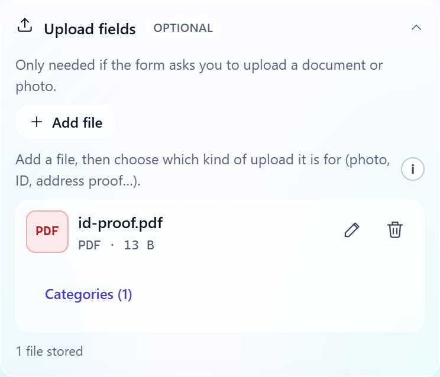
A test file with one category mapped.
4.3 Add test files for upload fields
Only needed if your forms ask for documents or photos.
On the Test tab, open Upload fields and click Add file.
Pick a few small dummy files: for example a PDF, a JPG photo and a PNG. Accepted: PDF, JPG, PNG, DOC, DOCX, XLS, XLSX, CSV, TXT, WEBP, GIF.
Click Categories on each file and choose what kind of document it is (Photo, ID proof, Address proof, Certificate…). This is called mapping: it tells QA Kit which upload box gets which file.
Files stay in your browser. They are only ever put into the form you are testing.
4.4 The Options page (advanced settings)
Open it from Setup → Advanced settings & file mappings. The menu on the left has seven pages. Click Save settings at the bottom when you change something (Site selectors have their own Save button).
Page
What it is for
General
Allowed test environments: list your team’s test domains, so the header shows Allowed test env (or warns Not allowlisted). Also the link-check limit, spelling ignore list and dictionary, Fill order (keep Page order), Tick “Same as …” boxes, and Keep values already in the form (on: only empty fields are filled).
Data & seed
How fake values look: Identity number format, Email / mobile locale, test PIN codes, first and last name pools, registration number pattern. Data seed: the same seed gives the same values every time, so a run can be repeated. Import project test values (CSV or JSON): use your own test data; imported values win over generated ones.
Files & mappings
Extra words that tell QA Kit a box is an upload of a certain kind (for example “board resolution”).
Site selectors
For a page where QA Kit misses or confuses a field: type the website name, then the exact CSS selector for each field type (or click Pick field on active page and click the field). Save with Save site config. It applies to that website only.
Credentials
Test logins per website, used when a form needs them. Not encrypted: throwaway test accounts only.
AI endpoints
The AI service addresses the AI assistant may use. Only company-approved ones.
Privacy & data
Auto-clear data after inactive days (0 = never).
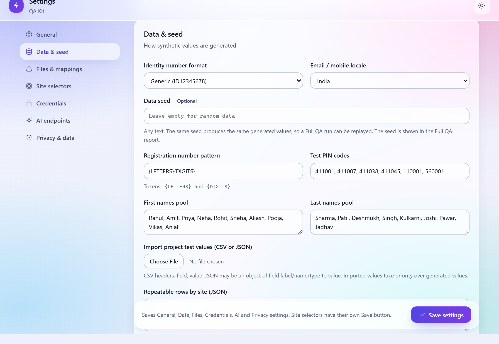
Data & seed: formats, seed, name pools and Import project test values.
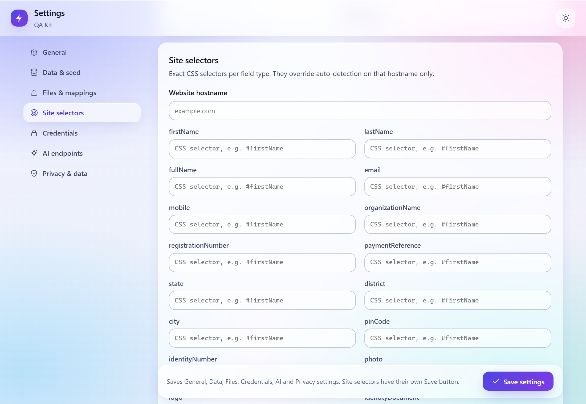
Site selectors: tell QA Kit exactly which box is which on one website.
Using your own test data
Make a CSV with two columns, field,value (for example PAN number,ABCDE1234F), or a JSON object such as {"Email address": "tester@acme.test"}, and import it under Data & seed. Field names can be the label, the field name or the field type. Every fill then uses your values for those fields and fake data for the rest.
Danger zone (Setup tab)
Clear files: deletes all stored test files and mappings.
Clear credentials: deletes saved test logins for all sites.
Clear all data: deletes everything (files, mappings, logins, logs, generated data, reports, settings). It asks first.
Part B
Use it
The everyday workflow, the fill modes, and the extra tools.
5Everyday workflow
Open the form in a normal browser tab, and open QA Kit (Ctrl+Shift+Y).
Optional: check the page. Click Scan page (Alt+S). You get the fields found plus accessibility, link and spelling issues. Security scan checks for common security problems; Copy report copies the findings for a bug ticket.
Choose a fill mode: Quick fill for everyday filling, or a test mode (section 6).
Press Fill the form (Alt+F). Watch the progress bar. Stop fill / QA run stops at any time.
Check the result. The green box says how many fields were filled or skipped. Details: Output → Activity log → View logs.
Optional: submit. In step 3, click Find page actions or Pick element. Preview only (don't actually click) is on by default. QA Kit never presses Delete, Cancel, Log out, Pay or Checkout.
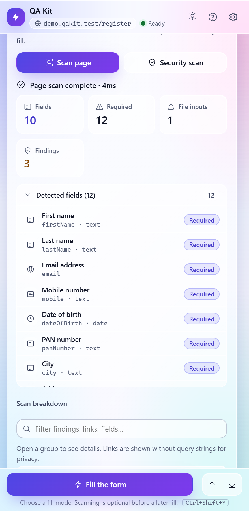
After Scan page: counts and every field found.
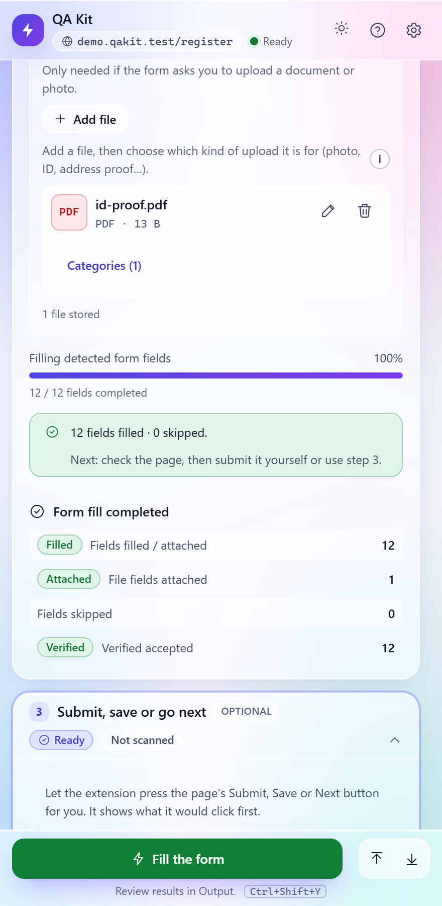
After Fill the form: 12 fields filled, 1 file attached, 0 skipped.The same form, filled with fake data, the upload attached and the consent box ticked.
Submit, save or go next (step 3) in detail
QA Kit can press the page’s Submit, Save or Next button for you. It shows what it would press first.
Open Submit, save or go next on the Test tab.
Click Find page actions. QA Kit lists the safe buttons it found (here: create account, a form submit). Delete, Remove, Cancel, Back, Close, Reset, Log out, Pay and Checkout are always skipped.
Or click Pick element, then click any button on the page. A card shows what you picked and how many matching buttons the page has.
Preview only (don’t actually click) is on by default, so nothing is pressed. Turn it off to really click (asked once).
Press Submit / Save / Next. Stop action stops at once.
Many identical buttons (for example 100 Save buttons in a table): in the picked-element card choose the wait between clicks (1–10 seconds). Under Advanced action settings, Pause when 100 or more matching actions are found adds that pause so the site is not flooded.
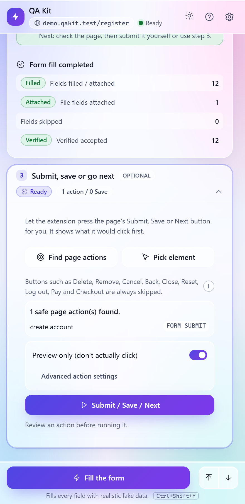
Step 3 after Find page actions, with Preview only on.
Tip: scroll the page from QA Kit
The ↑ and ↓ buttons next to Fill the form (Alt+T / Alt+B) scroll the web page to the top or bottom, even during a fill.
6Fill modes
Mode
Use it when
What happens
Quick fill
Most of the time
Realistic fake data in every empty field, top to bottom like a person. Fields that appear after an answer (City after State) are filled too.
Valid data
You want to confirm the form accepts correct input
Like Quick fill, but you choose Required fields and/or Optional fields.
Wrong data
You want to check the form shows clear error messages
Tries bad values (wrong email, short mobile, wrong PAN format…), judges each one, then puts the original values back.
Edge cases
You want to check limits
Tries very short, very long, minimum and maximum values, then puts the original values back.
Full QA run
You want one combined check and a report
Runs Valid data, Wrong data and Edge cases in turn, then offers an HTML report and JSON data to download. Nothing downloads until you click.
Choices for Wrong data and Edge cases
One field at a time (others get correct values) is recommended: any error can only come from the field being tested.
Field: test all fields, or pick one.
Click Save / Submit after each wrong value: for forms that show errors only after Save. Test sites only, because if the form wrongly accepts a value, it may really save it.
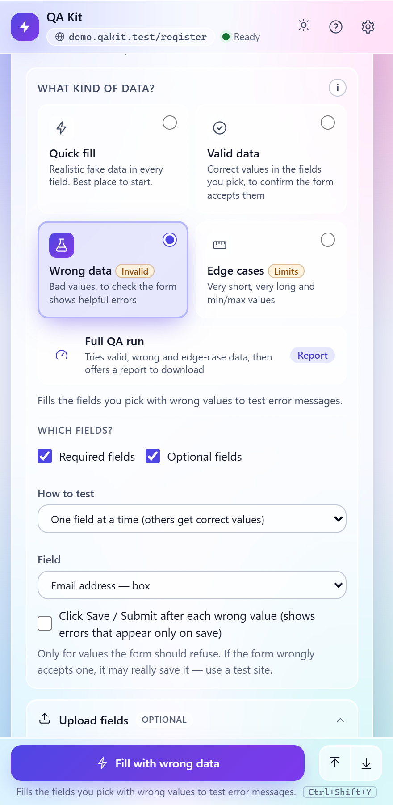
Wrong data chosen: One field at a time, field Email address.
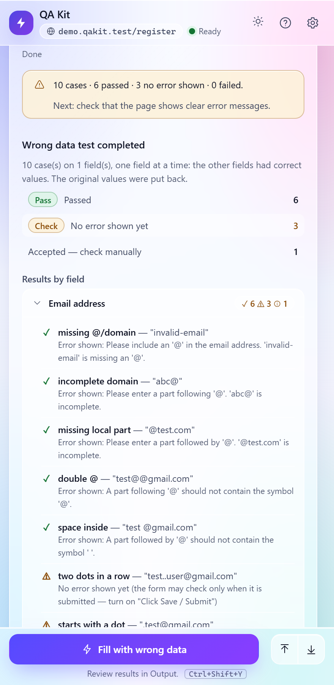
The result: each wrong email, and whether the form showed an error.
Reading the results
Result
Meaning
What to do
Passed
The form refused the wrong value (error shown, Save stayed disabled, or the browser blocked it).
Nothing
No error shown yet
The form did not complain. It may check only on Save.
Run again with Click Save / Submit… on
Failed
The form accepted a value it should refuse, or refused a correct one.
Raise a bug
Accepted — check manually
A value a correct form may accept, for example +91 in a mobile number.
Decide yourself
How to read the example above
10 wrong emails were tried. 6 Passed: the form refused them with a message (shown under each one). 3 No error shown yet: the form accepted “two dots in a row” and “starts with a dot” without complaining, so check them on Save, or raise a bug if the form should catch them. 1 Accepted — check manually: a value some forms allow.
Full QA run, step by step
Click Full QA run.
Optional: tick Submit once after QA and capture the page response. This really submits the form once, and you are asked to confirm.
Press Fill the form.
When it finishes, the Download the Full QA report card offers HTML report, JSON data and, with recording on, a Page screenshot. The card comes back if you reopen QA Kit on the same page.
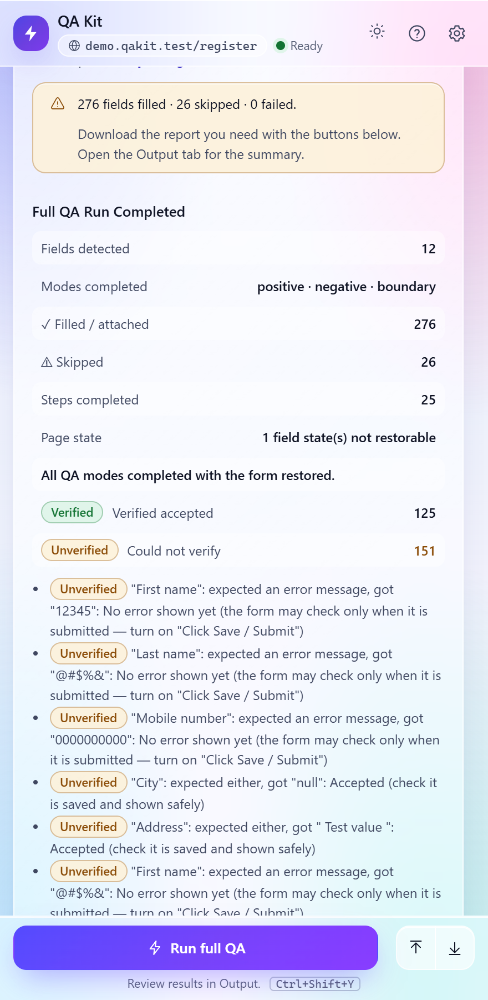
End of a Full QA run.
Reading the Full QA result
Modes completed: positive (valid data), negative (wrong data) and boundary (edge cases) all ran.
Filled / attached and Skipped count every value tried across all three modes.
Verified accepted: values the form clearly accepted or refused as expected.
Unverified — could not verify: the form gave no clear sign. Each one is listed with the reason, usually “No error shown yet”. Run Wrong data again with Click Save / Submit… on to check them.
Page state: whether every field was put back afterwards. If not, the field is named.
The HTML report button saves the same result as a page you can attach to a ticket or share.
7Other tools
Security scan
On the Test tab, Security scan looks at the page for common security problems a tester can see from the browser:
Encryption: login or payment boxes on a plain http page, forms that submit over http, and files loaded over http on a secure page (mixed content).
Risky code:eval / document.write, inline event handlers (onclick=…), external scripts without an integrity check (SRI), insecure WebSocket or postMessage use.
Leaks: secret-looking values in page fields, and tokens or passwords kept in browser storage.
Links and passwords: new-tab links without rel="noopener", password boxes without proper autocomplete settings.
Privacy: third-party trackers (Google Analytics, Meta Pixel, Hotjar, Clarity and others).
Forms without a visible anti-forgery (CSRF) token, marked UNVERIFIED.
It gives a Security score out of 100 and a list of findings, each marked High, Medium or Low with How to fix. UNVERIFIED means “can’t tell from the page alone”: check it with the developers. Copy report copies everything as text for your bug ticket.
It is a quick passive check of what the page shows, not a penetration test. It never attacks or changes the site.
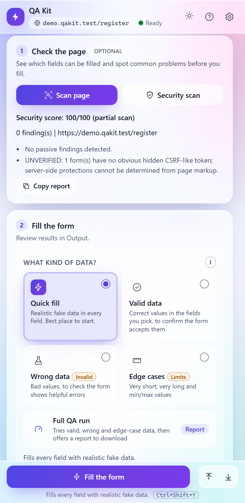
A security scan of the demo form.
Upload fields
After you add and map files (section 4.3), every upload box gets a file of the right kind, in page order. If a box has no mapped file, QA Kit uses another file in a format the box accepts, so no box stays empty. Boxes that already hold a document (“Replace document”) are never touched. If the site refuses a file, the box counts as failed and the Activity log shows the site’s message.
Recording errors and failed requests Chrome/Edge
On the Setup tab, turn on Capture activity during fill. While you fill and test, QA Kit records console errors and failed network requests (404, 500…). The counts appear in Output → QA summary → More metrics, and Full QA also offers a Page screenshot. Recording ends when the page reloads or you leave it; Stop capturing ends it sooner.
Page evidence screenshot Chrome/Edge
Output → Reports → Capture page evidence (PNG) saves a full-page screenshot with the recorded errors underneath, ready to attach to a bug. Chrome shows its “QA Kit started debugging this browser” bar for a moment while it takes the picture. That is normal.
Slow networks and screen sizes have their own pages next: Network and Viewport.
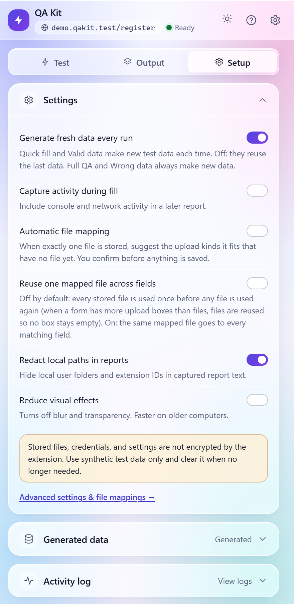
The Setup tab. Capture activity during fill turns recording on.
Network: test slow and offline connections Chrome/Edge
Makes the page in this tab load as if you were on a slow mobile connection, or offline, so you can see how the form behaves for real users with weak signal. Only this tab is affected.
Open the Setup tab and open Network.
Choose a Network profile (table below) and click Apply.
Use the page as normal: reload it, fill the form, submit it. The profile stays on, also after reloads, until you change it.
Click Restore normal when you finish.
While a profile is on, Chrome shows its “QA Kit started debugging this browser” bar. Restore normal removes it. The speeds are close to real networks, not exact.
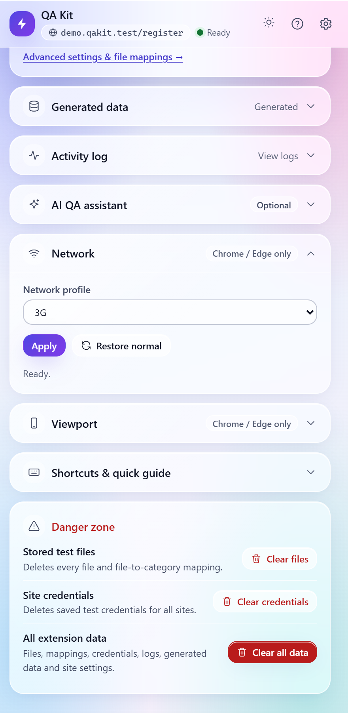
Setup → Network, with 3G chosen.
Profile
Behaves like
Use it to check
4G
Good mobile data (about 100 ms delay)
Normal mobile use
3G
Average mobile data (about 0.4 s delay, under 1 Mbps)
Loading messages, slow dropdowns and uploads
2G / Slow 2G
Very weak signal (1.5–2 s delay, very slow)
Time-outs, double clicks on Submit, half-loaded pages
Fast / Slow / Very slow
The same idea with the exact speed shown in the list
When you need a precise speed for a bug report
Offline
No connection at all
The error message when the internet drops
What to check on a slow or offline network
A clear loading sign appears while data loads or a file uploads, and the page doesn’t look frozen.
Pressing Submit twice doesn’t create two records (the button is disabled while it sends).
Dropdowns that load their options (State → City) still fill in, or say they are loading.
When the request fails or times out, the form shows a helpful message and keeps what the user typed.
Offline: the page says the connection is lost instead of failing silently.
Viewport: test phone, tablet and laptop sizes Chrome/Edge
Shows the page at the screen size of a real device, without a phone. Phone and tablet presets also behave like the device: mobile layout, touch input and the device’s screen sharpness (for example 3× on an iPhone).
Open the Setup tab and open Viewport.
Choose a Device preset: Phones (iPhone, Samsung Galaxy, Pixel…), Tablets (iPad, Galaxy Tab, Surface), Laptops & desktops (1280 to 2560 wide) or CSS breakpoints. Or type your own Width and Height (200 to 3000 pixels).
Rotate swaps width and height (portrait ↔ landscape).
Then pick one:
Apply to current page: the real page in this tab changes to that size, and you can click, type and fill it as on the device. It stays, also after reloads and moving to other pages in this tab, until Restore viewport.
Preview at this size: a quick full-page picture only, the page itself is not changed. Click the picture to zoom (− / + / Reset). It also says whether the page scrolls sideways.
Open page in a resized window (under the preview): opens the page in a new browser window of that size.
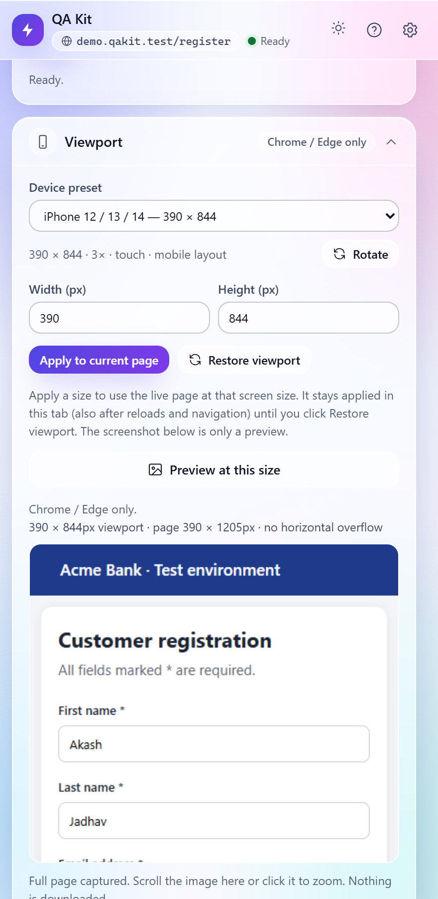
iPhone 12 / 13 / 14 preset (390 × 844, 3×, touch) and its preview: no horizontal overflow.
What to check at each size
No sideways scrolling. The preview line says no horizontal overflow; if it says there is overflow, part of the page is cut off on that device.
Every field, label and error message is readable and not covered by another element.
Buttons (Submit, Next, upload) are visible and big enough to tap; dropdowns and date pickers open properly with touch.
Fill the form with QA Kit while Apply to current page is on, to test the whole form at phone size.
Try at least one small phone (320 wide), one normal phone (390), one tablet and the most common laptop (1366 × 768).
While a size is applied, Chrome shows its “debugging” bar; Restore viewport removes it. Viewport changes the page’s screen size, not the browser window (use Open page in a resized window for that).
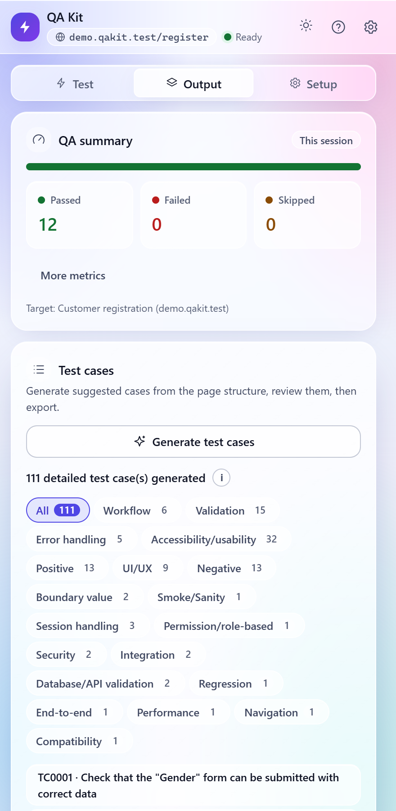
Output tab: QA summary and 111 generated test cases.
Test cases
Output → Test cases → Generate test cases writes test cases from the fields on the page. Click a type (Validation, Negative, Boundary value…) to filter. Export with Export CSV, or use the menu: Markdown, HTML report, Print / save as PDF, Playwright JS / TS / Python. Exports always contain every case.
QA summary and generated data
QA summary shows Passed / Failed / Skipped for the last run; More metrics adds fields, issues, accessibility, console errors and failed requests. Generated data → View data shows the fake values used, with Copy, Export JSON and Export CSV.
AI assistant (optional)
On the Setup tab you can ask an AI model a QA question about the page. It needs your own API endpoint and key, and the endpoint must be approved in Options → AI endpoints. QA Kit shows the exact request before anything is sent, and the key is not saved. Follow the team rules in section 12.
8Keyboard shortcuts
Keys
Action
Ctrl+Shift+Y
Open QA Kit (change it at chrome://extensions/shortcuts)
Alt+S
Scan page
Alt+F
Fill the form
Alt+T / Alt+B
Scroll the web page to the top / bottom
Alt+1 / 2 / 3
Test / Output / Setup tab
?
Open help
Esc
Close dialogs and menus
9What works and what does not
Works on
Normal websites and web apps, including React, Angular and Vue apps.
Forms made of web components (open shadow DOM).
Embedded frames from the same website.
Most custom dropdowns, date pickers, checkboxes and upload boxes.
Does not work on
Browser pages: chrome://, edge://, the Chrome Web Store, other extensions. Browsers block every extension there.
Embedded frames from a different website (payment boxes, third-party widgets): fill those by hand for now.
Apps drawn on a canvas (Flutter web apps, the Google Docs editor).
Signature pads and captchas.
Recording limits
It only sees what happens after recording starts.
It does not see errors inside embedded frames, or messages only the browser produces (such as security-policy blocks).
While recording, DevTools shows QA Kit’s script as the source of page console messages. That is expected.
Part C
Look after it
Fixing problems, staying up to date, team rules, and publishing updates.
10Problems, updating and reporting
Common problems
Problem
What to do
“Can’t read this page”
Reload the website tab and try again. Browser pages can’t be used.
Header says Access needed
Click any page button and choose Allow when the browser asks.
A button is greyed out
Hover over it to see why.
A field was skipped
It may be a custom widget QA Kit can’t fill. Fill it by hand and report it (below).
An upload box stayed empty
Add a file in Upload fields in a format the box accepts (see the box’s “PDF, JPG…” hint).
Wrong data says No error shown yet everywhere
The form checks only on Save. Turn on Click Save / Submit after each wrong value (test sites only).
A run seems slow
Pages with many uploads wait briefly after each one. Watch the progress bar; Stop fill / QA run stops it.
My files and settings disappeared after updating
You loaded the update from a different folder. Remove that copy and update the original folder instead (below).
Firefox: “appears to be corrupt”
Use about:debugging → Load Temporary Add-on… (section 3).
Can’t turn on Developer mode / no Load unpacked
Your company manages the browser. Ask IT (section 11).
Getting the latest update
When Kishor (the QA Kit owner) announces an update, update straight away, so everyone tests with the same QA Kit.
Get the update into the same folder you installed from:
Git users: run git pull in that folder.
ZIP users: extract the new ZIP and copy its contents over your existing QA Kit folder (choose Replace when Windows asks). Don’t load it from a new folder.
Open chrome://extensions and click the reload ↻ icon on QA Kit (④ in the picture in section 2).
Reload any open test pages. Old pages keep running the old copy until reloaded.
Firefox: remove the old temporary add-on and load the new one.
Your test files, mappings and settings are kept. Only Setup → Danger zone → Clear all data removes them.
Reporting a problem
Message Kishor (QA Kit owner). Include:
The page address (a test site) and what you expected to happen.
The text from Output → Activity log → View logs.
If possible, the saved page: press Ctrl+S in the browser and choose “Webpage, Complete”.
11Rollout checklist (team lead, once)
Do these before sending this guide to the team:
Check with IT. Company-managed Chrome or Edge can block Developer mode or Load unpacked. Ask IT to allow QA Kit (or developer-mode extensions) for the QA team, or testers get stuck at section 2.
Give repository access. GitHub repository Settings → Collaborators → Add people, one per tester. Or share the ready-made zips instead (next step).
Share ready-made zips (qa-kit-chrome.zip, qa-kit-firefox.zip) in one place everyone can reach, for example a shared drive folder, and replace them there after each update.
Prepare the shared setup from section 13 (standard test files, allowed domains).
Share this guide and agree the team rules in section 12.
Ask each tester to confirm the checklist below.
New tester checklist
QA Kit installed and pinned (section 2 or 3)
Opened on a test site, and access allowed (section 4.2)
Standard test files added and mapped (sections 4.3 and 13)
Team test domains added under Allowed test environments (section 4.4)
One Quick fill and one Wrong data run done on a test form
Knows where to report problems (section 10)
12Team rules (data safety)
Rule
Why and how
1. Test sites only
Never run QA Kit on production or on pages with real customer data. List test domains under Allowed test environments, so the header warns you elsewhere.
2. Dummy accounts only
Saved test logins (Options → Credentials) are not encrypted. Never store real passwords.
3. Approved AI services only
The AI assistant sends your question (and, if ticked, the page structure) to the AI address set in Options. Use only company-approved services, and keep Mask page URL and Mask page title on.
4. Fake files only
Use dummy PDFs and images, never real ID cards or certificates.
5. Submitting is your call
“Submit once after QA” and “Click Save / Submit after each wrong value” really submit the form. Use them only where test data may be saved.
6. Clean shared computers
Use Setup → Danger zone → Clear all data when you finish, or set Auto-clear data after inactive days in Options.
7. Check reports before sharing
Keep Redact local paths in reports on, and look at screenshots before attaching them to tickets.
13Sharing one setup across the team
QA Kit has no settings export yet, so each tester sets these up once by hand. To keep everyone the same:
Keep a shared folder (team drive) called QA Kit test files with the standard dummy files, named by type: photo.jpg, id-proof.pdf, address-proof.pdf, certificate.pdf…
Keep a one-page note next to it listing:
which file is mapped to which upload type;
the team’s Allowed test environments (test domains);
any Site selectors for difficult pages;
the agreed Data seed, if everyone should get the same values.
New testers copy these in during their first-time setup (section 4).
14Removing QA Kit
Optional: Setup → Danger zone → Clear all data to delete stored files, logins and settings.
Open chrome://extensions, click Remove on QA Kit, and confirm.
Delete the QA Kit folder.
Firefox: closing Firefox removes the temporary add-on.
15Publishing an update (QA Kit owner)
Follow these steps every time you change QA Kit, so the whole team stays on the same copy. Once on your computer: install Node.js, then run npm install in the project folder.
Write down what changed at the top of CHANGELOG.md, under today’s date, in plain words (Added / Changed / Fixed). Update FEATURES.md if a button or step changed. For this guide: edit docs/team-guide/guide.html, run npm run guide:shots if screens changed, then npm run guide:pdf.
Check the code:npm run lint must show no errors.
Run the browser tests:npm run test:e2e (builds the Chrome package, then runs about 50 real-browser tests). All must pass.
Build both packages:npm run build:chrome and npm run build:firefox create dist/qa-kit-chrome.zip and dist/qa-kit-firefox.zip.
Try it yourself: reload the extension from dist/chrome, then do one Quick fill and one upload on a test form.
Publish: commit and push to main, and replace the two zips in the team’s shared folder.
Tell the team: what changed, and “please update (section 10)”.
Good habits
Leave the number in manifest.json as it is. Chrome requires one, but the team tracks updates by date, not by number.
When a tester reports a page QA Kit can’t fill, ask for the saved page and the Activity log, fix it, add a test for it, and include it in the next update.
Never change the Firefox add-on ID (qa-kits@local.qakits), or Firefox users lose their stored data.
Appendices
FAQ, glossary and cheat sheet
Quick answers, the words QA Kit uses, and a one-page summary to print.
AFrequently asked questions
Does QA Kit send my data anywhere?
No. Everything stays in your browser: test files, settings and results. The only exception is the optional AI assistant, which sends your question (and, if you tick it, the page structure without field values) to the AI service set in Options, and only after showing you the request.
Can I use it on the live (production) website?
No. It types fake data and may submit forms. Use test, dev or staging sites only (section 12).
Why did it skip a field?
Common reasons: the field already had a value (Keep values already in the form is on), it is disabled or hidden, it is a widget QA Kit can’t fill (signature pad, captcha, a frame from another website), or no stored file fits an upload box. The Activity log names each skipped field and the reason.
Why does Chrome say “QA Kit started debugging this browser”?
Chrome shows this bar while a network profile or screen size is on, and for a moment during the evidence screenshot. Click Restore normal / Restore viewport to remove it. Recording does not cause it.
Will it press Submit or Pay by itself?
No. Filling never submits. Step 3 is preview-only until you turn that off, and it never presses Pay, Checkout, Delete, Cancel or Log out.
Does it work on mobile phones?
No, it is a desktop browser extension. To see how a form looks on a phone, use Setup → Viewport with a phone preset.
Does it work in Edge, Firefox or Safari?
Edge: yes, everything (same as Chrome). Firefox: yes, without recording, screenshots, network and screen sizes. Safari: no.
My files and settings disappeared.
You probably loaded an update from a different folder. Remove that copy in chrome://extensions, and update the original folder instead (section 10).
Can two testers share settings?
Not automatically yet. Follow section 13 to keep everyone’s setup the same.
A result says “No error shown yet”. Is that a bug?
Not always. Many forms check only when you press Save. Run Wrong data again with Click Save / Submit after each wrong value on (test sites only). If the form still accepts the wrong value, raise a bug.
Who do I ask for help?
Kishor (section 10).
BGlossary
Activity log
Output tab → step-by-step record of what QA Kit did, including why a field was skipped. Copy it into bug reports.
Allowed test environments
Your list of safe test domains (Options → General). The header warns when you are on another site.
Data seed
Any text. The same seed makes QA Kit generate the same fake values again, so a run can be repeated exactly.
Developer mode
A switch on chrome://extensions that allows installing an extension from a folder (Load unpacked).
Edge cases
Values at the limits: very short, very long, smallest and largest allowed.
Evidence screenshot
A full-page picture with the recorded errors underneath (Output → Reports).
Load unpacked
The button that installs QA Kit from its folder.
Mapping
Telling QA Kit which kind of document a test file is (Photo, ID proof…), so the right file goes into each upload box.
Network profile
Makes the page load as if on a slow connection (4G, 3G, 2G, Offline).
Preview only
Step 3 shows what it would click without clicking. On by default.
Recording
Collecting console errors and failed network requests while you test (setting Capture activity during fill).
Side panel
The QA Kit panel on the right of the Chrome / Edge window (Firefox: the sidebar).
Site selectors
Exact instructions for one website saying which box is which field (Options → Site selectors).
Test environment
A copy of a website for testing (test, dev, staging, UAT), never the live one.
Valid / Wrong data
Correct values that the form should accept / bad values it should refuse with a clear message.
Viewport
The visible size of the page. Setup → Viewport makes the page act like a phone, tablet or laptop screen.
CQA Kit cheat sheet
Print this page and keep it beside your screen. Test sites only.
Every day
Open the form (test site)
Ctrl+Shift+Y to open QA Kit
Optional: Scan page (Alt+S)
Choose a mode
Fill the form (Alt+F)
Check the result and the Activity log
Submit yourself, or step 3 (preview first)
Shortcuts
Ctrl+Shift+Y
Open QA Kit
Alt+S / Alt+F
Scan / Fill
Alt+T / Alt+B
Page top / bottom
Alt+123
Test / Output / Setup
? / Esc
Help / close
Modes
Quick fill
Fake data in every empty field
Valid data
Correct values: required / optional
Wrong data
Bad values: are errors shown?
Edge cases
Too short, too long, min, max
Full QA run
All three + downloadable report
Results
Passed
Form refused it: good
No error shown yet
Retry with Click Save / Submit
Failed
Raise a bug
Check manually
You decide
Something wrong?
“Can’t read this page”: reload the tab
Access needed: click Scan page → Allow
Field skipped: see the Activity log
Upload empty: add a file in an accepted format
Debugging bar: Restore normal / viewport
Rules
Test sites only, never production
Dummy accounts and fake files only
Approved AI services only
Clear data on shared computers
Help: Kishor
Install / update: https://github.com/KishorDeshmane/smartform-autofill · Full guide: docs/QA-Kit-Team-Guide.pdf

 1
2
3
4
1
2
3
4